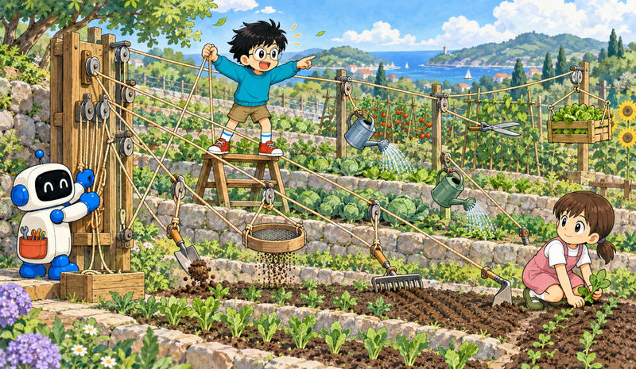
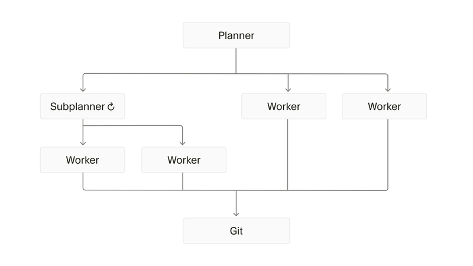

Feature 07 · ARTICLE · 2026 02
Towards Self-Driving Codebases
We wanted to know whether ten times the compute could buy ten times the throughput. It could, but not by letting agents sort themselves out. One agent on a browser engine lost the thread. Agents sharing a lock file ground each other down. A planner, executor and judge in a line ran at the speed of the slowest worker. What worked was ownership: a root planner spawning subplanners spawning workers, each owning a slice, none talking sideways, all reporting up. It peaked at ~1,000 commits per hour across 10M tool calls over one week, without intervention. The price was a small, steady error rate we stopped trying to eliminate.

Where it started
A browser was complex enough to reveal limitations with frontier models, with many subsystems that needed to work together. I asked Opus 4.5 for a plan and kept nudging it to keep going. It lost track, proclaimed success far from it, got stuck on implementation details. It could write good code in small pieces. The task was too overwhelming and needed breaking down.
Spawning agents by hand against a dependency graph raised throughput but not quality: they couldn’t communicate or give feedback on the project as a whole. GPT-5.1, and later GPT-5.2, followed instructions more precisely, a good fit for long-running agents, so we moved the harness to OpenAI models. Everything ran on one large Linux VM, controlled over SSH. We spent time up front on observability: every message, action and command output logged with timestamps, replayable, and pipeable back into Cursor to find patterns.
Three designs that failed
Equal agents sharing a coordination file. They held locks too long, forgot to release them, locked when it was illegal, and didn’t understand the significance of holding a lock. Twenty agents slowed to the throughput of one to three. Optimistic concurrency reduced overhead but not confusion. With no structure, nobody took on big tasks; they chose small, safe changes.
Roles in a pipeline: planner, executor, workers, judge. This resolved the coordination problems and introduced a new one. The system was bottlenecked by the slowest worker, and planning everything up front left agents unable to self-correct until the next iteration.
A continuous executor that planned and spawned as it went, with freshness rules: rewrite the scratchpad rather than append, summarize at context limits, self-reflect, pivot freely. Then it began sleeping randomly, doing work itself, refusing to spawn tasks, merging badly, claiming premature completion. It was holding too many roles at once: plan, explore, research, spawn, review, edit, merge, judge.
The design that held

A root planner owns the user’s whole scope and does no coding. Where the scope divides, it spawns subplanners that fully own a narrow slice in the same way. This is recursive; the same shape appears at every depth. Workers pick up tasks, drive them to completion on their own copy of the repo, know nothing of the larger system, and end with one handoff.
The handoff carries not just what was done but concerns, deviations, findings and feedback, and reaches the planner as a follow-up message. A planner that is “done” keeps receiving updates and keeps deciding. Information propagates up to owners with increasingly global views, without global synchronization or cross-talk. We removed the integrator we had built for quality control: hundreds of workers and one gate.
What we traded
Demanding 100% correctness before every commit serialized the system. A single typo halted it, workers left their scope, and many piled onto the same issue. With slack, agents can trust that others will fix things soon, which holds because ownership covers the whole codebase. This may indicate the ideal efficient system accepts some error rate, with a final green branch where an agent takes snapshots and does a fixup pass before release. We treat file collisions the same way and let the system settle.
After we limited RAM, the disk became the hotspot: hundreds of agents compiling a monolith moved many GB/s of build artifacts. Project structure and developer experience affect token and commit throughput, because working with the codebase dominates time instead of thinking and coding. Git and Cargo use shared locks; copy-on-write and deduplication might be low-hanging wins.
Instructions and prompts
The scale amplifies unclear instructions. “Spec implementation” sent agents into obscure features. Performance needed explicit instructions and enforced timeouts. Memory leaks and deadlocks needed process-based resource management to recover from. Our first simple browser converged on an architecture unfit to become a full browser, which was a failure of the specification, not the harness. Agents pulled in dependencies despite being told the project was from scratch; a later run laid out the dependency philosophy and named the forbidden libraries, and that corrected it. That run also broke the monolith into self-contained crates, left the repo heavily broken, converged in a few days, and ran several times faster.
Don’t instruct for what the model knows, only for what it doesn’t, like multi-agent collaboration, or what is specific to you, like how to run tests. Treat it as a brilliant new hire who knows engineering but not your codebase. Constraints beat instructions: “No TODOs, no partial implementations” works better than “remember to finish implementations.” Listing specific tasks makes the model chase them and implicitly deprioritize the rest. Give numbers for scope: “Generate 20-100 tasks” produced very different behavior from “generate many tasks.”
Principles
The system should be anti-fragile, since scaling agents scales the probability of failure. Prefer observation to assumptions drawn from human organizations or existing designs. Design for throughput explicitly, and accept what that costs elsewhere. These systems tend to be elegantly simple when done right, but it wasn’t clear which simple approach would work until we explored many.
Taste, judgement and direction came from humans; AI was a significant force-multiplier for iterating on the research. We shape the tools which shape us. The models were not explicitly trained to work this way, which suggests it’s emergent behavior and possibly the correct way of structuring software projects after all.